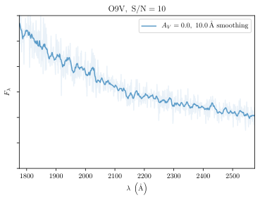
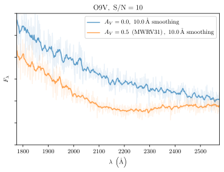
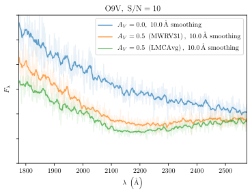
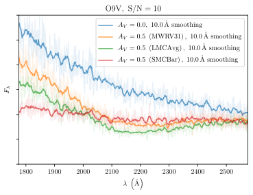

Dust and metallicity with UVEX
UVEX Community Workshop, Caltech, 14 March 2023
Gregory M. Green
(MPIA, Heidelberg)
Dust extinction curves (with photometry)
Extinction vs. wavelength varies with environment.
NUV and FUV bands sensitive to different dust features.


Dust extinction curves (with spectroscopy)
O9V spectrum
... behind 0.5 mag of V-band extinction
... in different environments






[Fe/H] precision
Typical metallicity precision across the HRD, using:
LSST + NUV + FUV


Multicolumn slide
Left column
Attribution: Prof. Google (1998).
Wide right column
Compact slide
Paragraph 1
Paragraph 2
Paragraph 3